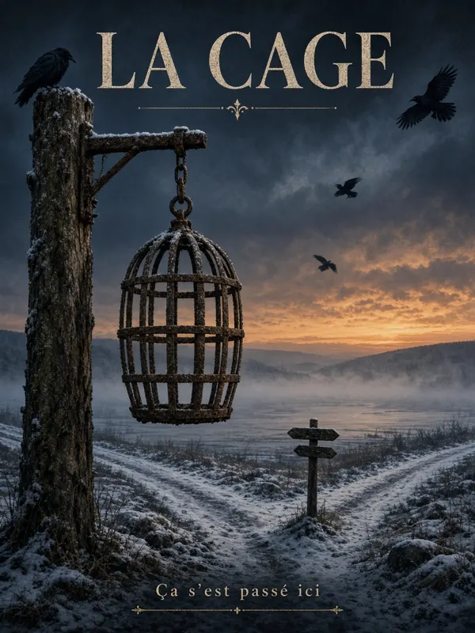
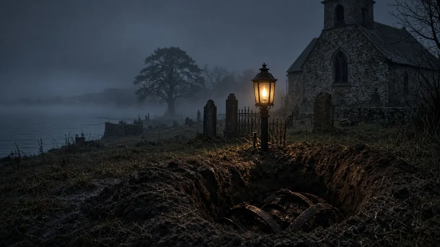
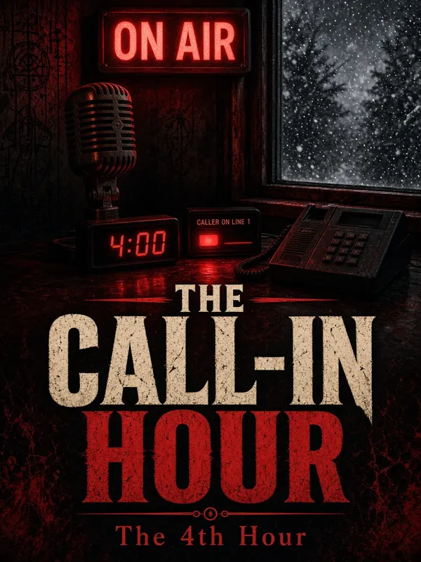
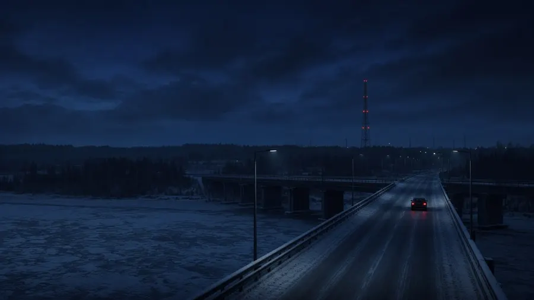
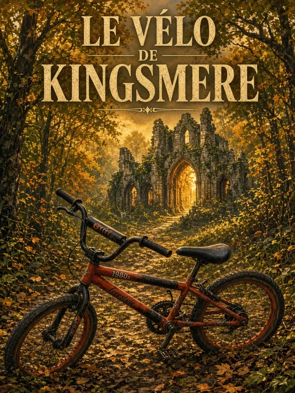
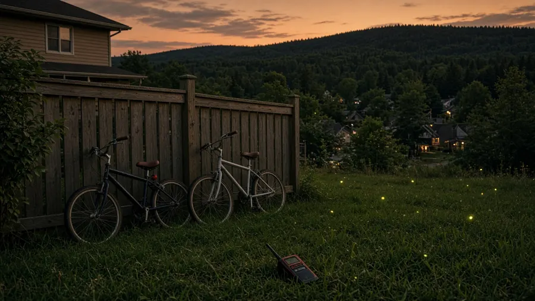

3 idées de livres pour toi
Une vraie histoire, une novella pour faire peur, pis un wildcard qui sent l'été.
La cage
✅ Basé sur des faits documentés
En 1763, on a pendu une femme pis exposé son corps dans une cage de fer. En 2013, la cage est revenue au Québec.
Le pitch
Tout le monde au Québec connaît « la Corriveau », la sorcière qui saute sur le dos des voyageurs la nuit sur la route de Lévis. Mais Marie-Josephte Corriveau a vraiment existé. Elle a été jugée par une cour martiale britannique pour le meurtre de son deuxième mari, pendue en avril 1763, pis son corps a été suspendu dans une cage de fer à un carrefour de Pointe-Lévy pendant une quarantaine de jours. Vers 1850, des fossoyeurs déterrent la cage au cimetière. Elle disparaît, se promène dans des expositions jusqu'aux États-Unis, pis on la retrouve en 2011 dans un musée de Salem, au Massachusetts. En 2015, trois expertises confirment : c'est elle. Le livre suit la cage, objet par objet, siècle par siècle, en se demandant ce qui est vrai, ce que la légende a inventé, pis pourquoi on a eu tant besoin d'en faire un monstre.
Personnages (réels)
- Marie-Josephte Corriveau, de Saint-Vallier
- Les gens qui ont retrouvé pis authentifié la cage : la Société d'histoire régionale de Lévis pis le Musée de la civilisation
- Philippe Aubert de Gaspé, qui en fait une créature dans Les Anciens Canadiens (1863)
- Toi, le narrateur qui va sur place
Décor
Saint-Vallier, Pointe-Lévy, la Côte-du-Sud au printemps, les voûtes de la Maison historique Chevalier à Québec.

Pourquoi ça vendrait
- La légende la plus connue du Québec, mais presque personne connaît la vraie histoire pis le retour de la cage.
- Même formule que l'Outaouais : vrais documents, voix québécoise, ton d'enquête.
- Public : fans de true crime, de patrimoine pis de légendes, les écoles pis les touristes de la Côte-du-Sud.
Format
Environ 45 000 mots, 15 chapitres, photos d'archives libres de droits à la fin (à vérifier une par une). Livre audio sur Arena, environ 4 h, même voix que Shawville.
Le fer se souvient. C'est ce que m'a dit la dame du musée, pis j'ai ri, avant de voir les cercles.Première ligne, idée
Sources : Radio-Canada, trois expertises · Le Soleil, 2015 · Société d'histoire de Lévis · La Voix du Sud
The Call-In Hour
✏️ Fiction, c'est une idée
A dying overnight radio show in Gatineau gets one caller every night at 4:00 AM. Every caller has already been dead for a year.
Le pitch
Dale Ouellette anime la dernière émission de nuit d'une petite station bilingue qui va fermer dans un mois. Personne écoute. Pis une nuit de février, à 4 h pile, la ligne 1 s'allume. C'est une femme qui veut juste dire à son fils de pas prendre le pont ce matin. Dale l'oublie, jusqu'à ce qu'il lise l'avis de décès : elle est morte l'hiver passé. Le lendemain, à 4 h, un autre appel. Puis un autre. Les morts appellent pour avertir les vivants, pis l'émission devient soudain la plus écoutée de la région. Mais Dale découvre que chaque avertissement a un prix, pis qu'il reste un appel qu'il veut pas recevoir : le sien. C'est une novella serrée, une seule nuit par chapitre, avec la peur qui monte comme dans Second Notice.
Personnages
- Dale Ouellette, 54 ans, animateur fatigué pis divorcé
- Priya, la jeune technicienne qui enregistre tout
- « Line 1 », la voix qui revient
Décor
Un studio en sous-sol pis les ponts entre Gatineau et Ottawa, en plein février.

Pourquoi ça vendrait
- Un concept qui s'explique en une phrase, parfait pour TikTok pis les clubs de lecture d'horreur.
- Ça marche super bien en audio : un livre sur la radio, lu par une voix.
- Ça complète bien ta série, à côté de Second Notice pis Missing Time.
Format
Novella de 25 000 à 30 000 mots, 9 chapitres (une nuit chacun). Livre audio sur Arena, environ 2 h 30, voix anglaise grave.
The board lit up at 4:00 exactly, and I remember thinking that nobody calls a station nobody listens to.Première ligne, idée
Le vélo de Kingsmere
✏️ Fiction, c'est une idée
Été 1986, Old Chelsea : quatre jeunes en BMX montent aux ruines de Kingsmere pis trouvent quelque chose que le premier ministre a jamais voulu qu'on trouve.
Le pitch
Tu l'as vécu : monter la côte en vélo jusqu'aux ruines de Mackenzie King, le parc de la Gatineau pour terrain de jeu. Là, on en fait une aventure à la Stranger Things en français, sans écrans ni cellulaires. Max, 12 ans, d'Aylmer, passe l'été chez sa tante à Old Chelsea. Avec trois amis, il trouve dans les ruines une vieille boîte à lettres en fer pis un carnet qui parle aux morts, comme King le faisait pendant ses séances. Sauf que le carnet répond. Course en vélo dans les sentiers, walkie-talkies, chalets abandonnés, pis une vraie leçon : on peut pas parler aux morts sans écouter les vivants. C'est un pont parfait avec ton tome sur l'Outaouais : les jeunes lisent le roman, les parents lisent les vraies séances.
Personnages
- Max, 12 ans, le narrateur
- Julie, la plus brave de la gang
- Ti-Paul pis Kevin, les deux comiques
- Tante Ginette, qui en sait plus qu'elle le dit
Décor
Old Chelsea, le parc de la Gatineau pis les ruines de Kingsmere, à l'été 1986.

Pourquoi ça vendrait
- La nostalgie des années 80 vend fort, pis le jeunesse est un gros marché au Québec (écoles, bibliothèques).
- Tu peux l'écrire de mémoire : c'est ton enfance.
- Ça peut devenir une série, avec un été pis un lieu hanté par tome.
Format
Environ 35 000 mots, 18 chapitres courts, quelques illustrations à faire toi-même (t'es animateur 2D!). Livre audio sur Arena, environ 3 h, voix jeune pis énergique.
En 1986, à Old Chelsea, la côte de Kingsmere se montait debout sur les pédales, pis personne remontait pareil.Première ligne, idée
🗳️ Lequel on fait?
Réponds-moi juste le numéro dans le chat :
Mon choix : la 1, parce que ta série Ça s'est passé ici a déjà sa formule pis la Corriveau, ça se vend tout seul.